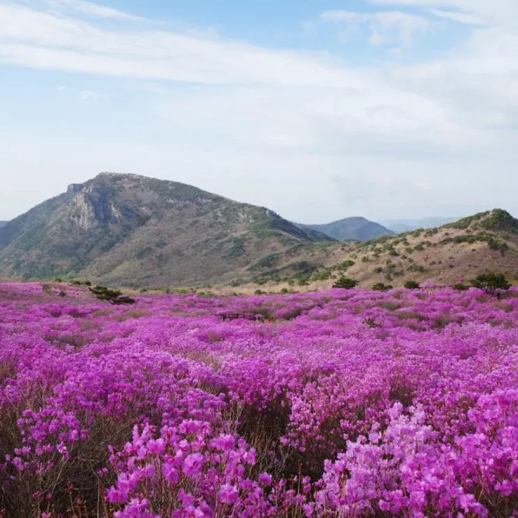

비슬산
- 경상북도 청도군 각북면과 대구광역시 달성군 가창면 · 옥포면 · 유가면에 걸쳐 있는 산이며 높이는 1,083.4m이다.
- 비슬산에는 유가사 · 소재사 · 용연사 · 용문사 · 임휴사 · 용천사 등의 많은 사찰이 산재해 있다.
- 1993년 1월 18일에는 자연휴양림으로 지정되어 관광지로서 각광받고 있다.
- 매년 진행되는 참꽃문화재와 얼음동산으로도 잘 알려져 있으며 비슬산의 계곡 근처에는 캠핑장이 있어 자연과 공존할 수 있다.